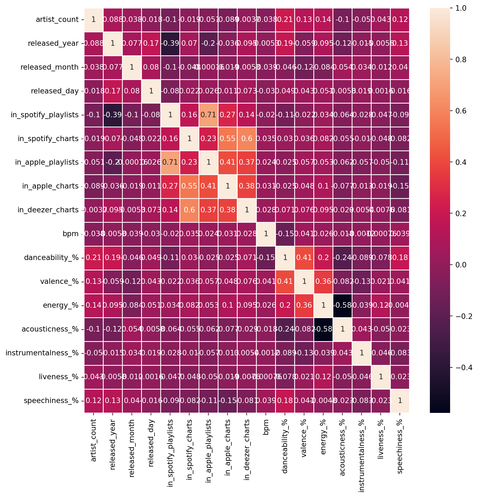

import numpy as np
import pandas as pd
import matplotlib.pyplot as plt
import seaborn as sns
from matplotlib.pyplot import figureImporting the data set
df = pd.read_csv("Input/spotify-2023.csv", encoding = 'latin-1')
df.head()| track_name | artist(s)_name | artist_count | released_year | released_month | released_day | in_spotify_playlists | in_spotify_charts | streams | in_apple_playlists | ... | bpm | key | mode | danceability_% | valence_% | energy_% | acousticness_% | instrumentalness_% | liveness_% | speechiness_% | |
|---|---|---|---|---|---|---|---|---|---|---|---|---|---|---|---|---|---|---|---|---|---|
| 0 | Seven (feat. Latto) (Explicit Ver.) | Latto, Jung Kook | 2 | 2023 | 7 | 14 | 553 | 147 | 141381703 | 43 | ... | 125 | B | Major | 80 | 89 | 83 | 31 | 0 | 8 | 4 |
| 1 | LALA | Myke Towers | 1 | 2023 | 3 | 23 | 1474 | 48 | 133716286 | 48 | ... | 92 | C# | Major | 71 | 61 | 74 | 7 | 0 | 10 | 4 |
| 2 | vampire | Olivia Rodrigo | 1 | 2023 | 6 | 30 | 1397 | 113 | 140003974 | 94 | ... | 138 | F | Major | 51 | 32 | 53 | 17 | 0 | 31 | 6 |
| 3 | Cruel Summer | Taylor Swift | 1 | 2019 | 8 | 23 | 7858 | 100 | 800840817 | 116 | ... | 170 | A | Major | 55 | 58 | 72 | 11 | 0 | 11 | 15 |
| 4 | WHERE SHE GOES | Bad Bunny | 1 | 2023 | 5 | 18 | 3133 | 50 | 303236322 | 84 | ... | 144 | A | Minor | 65 | 23 | 80 | 14 | 63 | 11 | 6 |
5 rows × 24 columns
df.info()<class 'pandas.core.frame.DataFrame'>
RangeIndex: 953 entries, 0 to 952
Data columns (total 24 columns):
# Column Non-Null Count Dtype
--- ------ -------------- -----
0 track_name 953 non-null object
1 artist(s)_name 953 non-null object
2 artist_count 953 non-null int64
3 released_year 953 non-null int64
4 released_month 953 non-null int64
5 released_day 953 non-null int64
6 in_spotify_playlists 953 non-null int64
7 in_spotify_charts 953 non-null int64
8 streams 953 non-null object
9 in_apple_playlists 953 non-null int64
10 in_apple_charts 953 non-null int64
11 in_deezer_playlists 953 non-null object
12 in_deezer_charts 953 non-null int64
13 in_shazam_charts 903 non-null object
14 bpm 953 non-null int64
15 key 858 non-null object
16 mode 953 non-null object
17 danceability_% 953 non-null int64
18 valence_% 953 non-null int64
19 energy_% 953 non-null int64
20 acousticness_% 953 non-null int64
21 instrumentalness_% 953 non-null int64
22 liveness_% 953 non-null int64
23 speechiness_% 953 non-null int64
dtypes: int64(17), object(7)
memory usage: 178.8+ KBdf.isna().sum()track_name 0
artist(s)_name 0
artist_count 0
released_year 0
released_month 0
released_day 0
in_spotify_playlists 0
in_spotify_charts 0
streams 0
in_apple_playlists 0
in_apple_charts 0
in_deezer_playlists 0
in_deezer_charts 0
in_shazam_charts 50
bpm 0
key 95
mode 0
danceability_% 0
valence_% 0
energy_% 0
acousticness_% 0
instrumentalness_% 0
liveness_% 0
speechiness_% 0
dtype: int64df.shape(953, 24)df.describe()| artist_count | released_year | released_month | released_day | in_spotify_playlists | in_spotify_charts | in_apple_playlists | in_apple_charts | in_deezer_charts | bpm | danceability_% | valence_% | energy_% | acousticness_% | instrumentalness_% | liveness_% | speechiness_% | |
|---|---|---|---|---|---|---|---|---|---|---|---|---|---|---|---|---|---|
| count | 953.000000 | 953.000000 | 953.000000 | 953.000000 | 953.000000 | 953.000000 | 953.000000 | 953.000000 | 953.000000 | 953.000000 | 953.00000 | 953.000000 | 953.000000 | 953.000000 | 953.000000 | 953.000000 | 953.000000 |
| mean | 1.556139 | 2018.238195 | 6.033578 | 13.930745 | 5200.124869 | 12.009444 | 67.812172 | 51.908709 | 2.666317 | 122.540399 | 66.96957 | 51.431270 | 64.279119 | 27.057712 | 1.581322 | 18.213012 | 10.131165 |
| std | 0.893044 | 11.116218 | 3.566435 | 9.201949 | 7897.608990 | 19.575992 | 86.441493 | 50.630241 | 6.035599 | 28.057802 | 14.63061 | 23.480632 | 16.550526 | 25.996077 | 8.409800 | 13.711223 | 9.912888 |
| min | 1.000000 | 1930.000000 | 1.000000 | 1.000000 | 31.000000 | 0.000000 | 0.000000 | 0.000000 | 0.000000 | 65.000000 | 23.00000 | 4.000000 | 9.000000 | 0.000000 | 0.000000 | 3.000000 | 2.000000 |
| 25% | 1.000000 | 2020.000000 | 3.000000 | 6.000000 | 875.000000 | 0.000000 | 13.000000 | 7.000000 | 0.000000 | 100.000000 | 57.00000 | 32.000000 | 53.000000 | 6.000000 | 0.000000 | 10.000000 | 4.000000 |
| 50% | 1.000000 | 2022.000000 | 6.000000 | 13.000000 | 2224.000000 | 3.000000 | 34.000000 | 38.000000 | 0.000000 | 121.000000 | 69.00000 | 51.000000 | 66.000000 | 18.000000 | 0.000000 | 12.000000 | 6.000000 |
| 75% | 2.000000 | 2022.000000 | 9.000000 | 22.000000 | 5542.000000 | 16.000000 | 88.000000 | 87.000000 | 2.000000 | 140.000000 | 78.00000 | 70.000000 | 77.000000 | 43.000000 | 0.000000 | 24.000000 | 11.000000 |
| max | 8.000000 | 2023.000000 | 12.000000 | 31.000000 | 52898.000000 | 147.000000 | 672.000000 | 275.000000 | 58.000000 | 206.000000 | 96.00000 | 97.000000 | 97.000000 | 97.000000 | 91.000000 | 97.000000 | 64.000000 |
fig, ax = plt.subplots(figsize=(10,10))
sns.heatmap(df.corr(numeric_only=True), annot=True, linewidth=.5, ax=ax)
plt.show()
Converting column types
df['streams'] = pd.to_numeric(df['streams'], errors= 'coerce')
df['in_deezer_playlists'] = pd.to_numeric(df['in_deezer_playlists'], errors= 'coerce')
df['in_shazam_charts'] = pd.to_numeric(df['in_shazam_charts'],errors='coerce')Handling missing values
df['key'] = df['key'].fillna('Unknown')
df['in_shazam_charts'] = df['in_shazam_charts'].fillna(0)
#Fill NaNs with zero or another appropriate value
df.fillna(0, inplace= True)
#Ensure all columns have finite value
df.replace([float('inf'), float('-inf')], 0, inplace=True)Dataset for the songs released in 2023
#filtering data according to year 2023
year_2023 = df[df['released_year']==2023]
year_2023.head()| track_name | artist(s)_name | artist_count | released_year | released_month | released_day | in_spotify_playlists | in_spotify_charts | streams | in_apple_playlists | ... | bpm | key | mode | danceability_% | valence_% | energy_% | acousticness_% | instrumentalness_% | liveness_% | speechiness_% | |
|---|---|---|---|---|---|---|---|---|---|---|---|---|---|---|---|---|---|---|---|---|---|
| 0 | Seven (feat. Latto) (Explicit Ver.) | Latto, Jung Kook | 2 | 2023 | 7 | 14 | 553 | 147 | 141381703.0 | 43 | ... | 125 | B | Major | 80 | 89 | 83 | 31 | 0 | 8 | 4 |
| 1 | LALA | Myke Towers | 1 | 2023 | 3 | 23 | 1474 | 48 | 133716286.0 | 48 | ... | 92 | C# | Major | 71 | 61 | 74 | 7 | 0 | 10 | 4 |
| 2 | vampire | Olivia Rodrigo | 1 | 2023 | 6 | 30 | 1397 | 113 | 140003974.0 | 94 | ... | 138 | F | Major | 51 | 32 | 53 | 17 | 0 | 31 | 6 |
| 4 | WHERE SHE GOES | Bad Bunny | 1 | 2023 | 5 | 18 | 3133 | 50 | 303236322.0 | 84 | ... | 144 | A | Minor | 65 | 23 | 80 | 14 | 63 | 11 | 6 |
| 5 | Sprinter | Dave, Central Cee | 2 | 2023 | 6 | 1 | 2186 | 91 | 183706234.0 | 67 | ... | 141 | C# | Major | 92 | 66 | 58 | 19 | 0 | 8 | 24 |
5 rows × 24 columns
Top 5 songs and their artists
top_songs_and_artists= df[['track_name','artist(s)_name','streams']].sort_values(by='streams',ascending=False).head()
top_songs_and_artists| track_name | artist(s)_name | streams | |
|---|---|---|---|
| 55 | Blinding Lights | The Weeknd | 3.703895e+09 |
| 179 | Shape of You | Ed Sheeran | 3.562544e+09 |
| 86 | Someone You Loved | Lewis Capaldi | 2.887242e+09 |
| 620 | Dance Monkey | Tones and I | 2.864792e+09 |
| 41 | Sunflower - Spider-Man: Into the Spider-Verse | Post Malone, Swae Lee | 2.808097e+09 |
Creating Plot
#Set the style
sns.set(style="whitegrid")
fig, ax = plt.subplots(figsize=(10, 6))
bars = sns.barplot(
x = 'streams',
y = 'track_name',
hue='track_name' ,
data = top_songs_and_artists,
palette= "viridis",
edgecolor= 'black'
)
# Add annotations
for bar in bars.patches:
plt.annotate(
format(bar.get_width(), ','),
(bar.get_width(), bar.get_y() + bar.get_height() / 2),
ha = 'center',
va = 'center',
xytext=(5,0),
textcoords='offset points'
)
# Set titles and labels
ax.set_title("Top 5 Songs and The Artists", fontsize = 16, weight = 'bold')
ax.set_xlabel("Number of Streams", fontsize=14)
ax.set_ylabel("Tracks' Names", fontsize= 14)
#Remove the top and right spines
sns.despine(left = True, bottom = True)
#show the plot
plt.show()Creating Interractive Plot
import plotly.express as px
#Create the plot
fig = px.bar(
top_songs_and_artists,
x='streams',
y='track_name',
text = 'streams',
color = 'streams',
color_continuous_scale='viridis',
title="Top 5 Songs and The Artists",
)
#Update the layout
fig.update_layout(
xaxis_title="Number of Streams",
yaxis_title= "Tracks' Names",
title_font_size=22,
title_font_family="Arial",
xaxis=dict(showgrid=False),
yaxis=dict(showgrid=False)
)
#Update the traces
fig.update_traces(texttemplate='%{text:,}', textposition='outside')
#show the plot
fig.show()Numeber of songs over year on Spotify
year_song= df.groupby('released_year')['track_name'].count()
year_songreleased_year
1930 1
1942 1
1946 1
1950 1
1952 1
1957 2
1958 3
1959 2
1963 3
1968 1
1970 2
1971 1
1973 1
1975 2
1979 1
1982 2
1983 1
1984 4
1985 2
1986 2
1987 1
1991 2
1992 1
1994 1
1995 2
1996 1
1997 1
1998 1
1999 5
2000 4
2002 6
2003 2
2004 4
2005 1
2007 1
2008 2
2010 7
2011 10
2012 10
2013 13
2014 13
2015 11
2016 18
2017 23
2018 10
2019 36
2020 37
2021 119
2022 402
2023 175
Name: track_name, dtype: int64#Set the style
sns.set(style = "whitegrid")
# First plot: Number of songs over years
fig, ax1 = plt.subplots(figsize=(12,6))
ax1.plot(year_song.index,year_song.values,marker='o', linestyle='-', color='green',label='All years')
ax1.set_xlabel("Released Years", fontsize=14),
ax1.set_ylabel("Number of Tracks", fontsize= 14),
ax1.set_title("Released Songs Over Years on Spotify", fontsize=16, weight='bold')
ax1.legend()
ax1.grid(True)
# show the plot
plt.show()year1= df[(df['released_year']>=2018) & (df['released_year']<= 2023)]
year2=year1.groupby('released_year')['track_name'].count()
year2released_year
2018 10
2019 36
2020 37
2021 119
2022 402
2023 175
Name: track_name, dtype: int64fig, ax2 = plt.subplots(figsize=(12,6))
ax2.plot(year2.index, year2.values,marker='o', linestyle='-', color='green',label='2018-2023')
ax2.set_xlabel("Released Years", fontsize=14),
ax2.set_ylabel("Number of Tracks", fontsize= 14),
ax2.set_title("Released Songs Over Past 6 Years on Spotify", fontsize=16, weight='bold')
ax2.legend()
ax2.grid(True)
# show the plot
plt.show()Interractive plots
#First plot: Number of songs over years
fig1 = px.line(
year_song.reset_index(),
x = 'released_year',
y = 'track_name',
title= 'Released Songs Over years on Spotify',
labels= {'released_year': 'Released Years', 'track_name': 'Number of Tracks'}
)
fig1.update_traces(mode='lines+markers',line_color="green")
fig1.update_layout(title_font_size=22, title_font_family="Arial")
# Second plot: Number of songs over the past 6 years
fig2 = px.line(
year2.reset_index(),
x = 'released_year',
y = 'track_name',
title= 'Released Songs Over the past 6 years on Spotify',
labels= {'released_year': 'Released Years', 'track_name': 'Number of Tracks'}
)
fig2.update_traces(mode='lines+markers',line_color="green")
fig2.update_layout(title_font_size=22, title_font_family="Arial")
#show the plots
fig1.show()
fig2.show()Playlist vs streams
# Create subplots
fig, axs = plt.subplots(1,2, figsize = (16,6), sharey=True)
#Scatter plots for Spotify Playlists vs Streams
axs[0].scatter(df['in_spotify_playlists'],df['streams'],color='blue',alpha=0.5)
axs[0].set_xlabel('Number of Spotify Playlists')
axs[0].set_ylabel('Streams')
axs[0].set_title('Spotify Playlists vs Streams')
axs[0].grid(True)
#Scatter plot for Apple Playlists vs Streams
axs[1].scatter(df['in_apple_playlists'],df['streams'],color='green',alpha=0.5)
axs[1].set_xlabel('Number of Apple Playlists')
axs[1].set_ylabel('Streams')
axs[1].set_title('Apple Playlists vs Streams')
axs[1].grid(True)
#Set a common title
fig.suptitle('Number of Playlists vs Streams (Spotify vs Apple Music)', fontsize=16)
plt.show()Analyzing features
#Select the columns for analysis
features = ['danceability_%','valence_%','energy_%','acousticness_%','instrumentalness_%','liveness_%','speechiness_%']
sns.pairplot(df[features],diag_kind='kde', height= 1.75)
plt.suptitle('Pairwise Relationships between Audio Feature',y=1.02)
plt.show()Creating radar Chart for 1st song
from math import pi
def create_radar_chart(df, row, title):
categories = list(df[features].columns)
values = df[features].loc[row].values.flatten().tolist()
values += values[:1]
angles = [n/ float(len(categories)) * 2 * pi for n in range(len(categories))]
angles += angles[:1]
ax = plt.subplot(111, polar=True)
plt.xticks(angles[:-1],categories,color='grey',size=8)
ax.plot(angles,values,linewidth=1,linestyle='solid')
ax.fill(angles,values,'b',alpha=0.1)
plt.title(title,size=11,color='b',y=1.1)
plt.figure(figsize=(6,6))
create_radar_chart(df,0,df['track_name'].iloc[0])
plt.show()Creating clusters
from sklearn.cluster import KMeans
kmeans = KMeans(n_clusters=5, random_state=0, n_init=10).fit(df[features])
df['cluster']= kmeans.labels_
#plot clusters
plt.figure(figsize=(12,8))
sns.scatterplot(x='danceability_%', y='energy_%', hue='cluster', palette='viridis', data=df, alpha=0.7)
plt.title('Cluster Analysis of Audio Features')
plt.xlabel('Danceability (%)')
plt.ylabel('Energy (%)')
plt.show()Trends of the future over time
audio_features = ['danceability_%','valence_%','energy_%','acousticness_%','instrumentalness_%','liveness_%','speechiness_%']
trends = df.groupby('released_year')[audio_features].mean().reset_index()
# Plotting trends over time
fig, ax = plt.subplots(len(audio_features),1, figsize=(14,20),sharex=True)
for i, feature in enumerate(audio_features):
sns.lineplot(x='released_year', y = feature, data=trends, ax =ax[i])
ax[i].set_title(f'Trends of {feature.replace("_%","")} over Years')
ax[i].set_ylabel(feature.replace("_%"," (%)"))
plt.xlabel('Released Year')
plt.tight_layout()
plt.show()Heatmap for frequency of the chart appearance
heatmap_data= df[['in_spotify_charts','in_apple_charts','in_deezer_charts','in_shazam_charts']]
plt.figure(figsize=(10,8))
sns.heatmap(heatmap_data.corr(),annot=True,cmap='coolwarm',fmt= '.2f')
plt.title('Correlation Heatmap of Chart Apperances')
plt.show()Max Difference between danceability and energy
yearly_data = df.groupby('released_year').agg({'danceability_%': 'mean', 'energy_%':'mean'}).reset_index()
fig, ax = plt.subplots(figsize=(10,6))
#Plot danceability and energy as plot lines
ax.plot(yearly_data['released_year'], yearly_data['danceability_%'], label='Danceability', color = 'blue')
ax.plot(yearly_data['released_year'], yearly_data['energy_%'], label='Energy',color = 'salmon')
#Highlight the maximum difference
yearly_data['difference'] = abs(yearly_data['danceability_%'] - yearly_data['energy_%'])
max_diff_year= yearly_data.loc[yearly_data['difference'].idxmax()]
# Annotations with text in the bottom left corner
ax.annotate(f"Max diff: {max_diff_year['difference']:.2f}%",
xy=(max_diff_year['released_year'],max_diff_year['danceability_%']),
xytext=(0.65, 0.25),# Fractional Cordinates (0.05,0.05) for the bottom left corner
textcoords= 'figure fraction',
arrowprops={'arrowstyle':"->",'color':'gray'},ha ='left')
ax.set_xlabel('Year')
ax.set_ylabel('Percentage')
ax.set_title('Average Danceability and Energy by Year')
ax.legend()
plt.show()# Scatter Plot with Trend Line: Number of Artists vs Realead Year
def scatter_plot_with_trendline(df, x_col,y_col, title, xlabel, ylabel):
plt.figure(figsize=(10,6))
sns.regplot(x=df[x_col],y=df[y_col],scatter_kws={'alpha':0.5, 's':10}, line_kws={'color':'red'})
plt.title(title)
plt.xlabel(xlabel)
plt.ylabel(ylabel)
plt.grid(True)
plt.show()
scatter_plot_with_trendline(df, 'released_year', 'artist_count', 'Number of Artist vs Released Year', 'Release Year', 'Number of Artists')Max collaborations
# Add a new column to indicate if the track is a collaboration (more than one artist)
df['is_collaboration']= df['artist_count'] > 1
# Filter the DataFrame to include only the years between 1990 and 2023
filtered_df= df[(df['released_year']>= 1995) & (df['released_year'] <=2023)]
# Group by released year and count the number of collaboration and solo tracks
yearly_collaborations = filtered_df.groupby('released_year')['is_collaboration'].sum().reset_index()
yearly_solo_tracks = filtered_df.groupby('released_year')['is_collaboration'].count().reset_index()
yearly_solo_tracks['is_collaboration'] -= yearly_collaborations['is_collaboration']
# Combine the data into a single DataFrame for plotting
yearly_data = pd.DataFrame({'Year':yearly_collaborations['released_year'],
'Collaborations': yearly_collaborations['is_collaboration'],
'Solo Tracks': yearly_solo_tracks['is_collaboration']
})
# Plot
plt.figure(figsize=(12,6))
plt.stackplot(yearly_data['Year'], yearly_data['Solo Tracks'], yearly_data['Collaborations'], labels= ['Solo Tracks','Collaborations'],colors = ['skyblue','salmon'])
plt.xlabel('Release Year')
plt.ylabel('Number of Tracks')
plt.title('Number of Solo Tracks and Collaborations by Released Year(1990-2023)')
plt.legend(loc = 'upper left')
plt.grid(axis = 'y', linestyle = '--', alpha = 0.7)
# Highlight the year with the most collaborations
max_collab_year = yearly_data.loc[yearly_data['Collaborations'].idxmax()]
plt.annotate(
f"Max collaborations: {max_collab_year['Collaborations']}",
xy = (max_collab_year['Year'], max_collab_year['Collaborations']),
xytext= (max_collab_year['Year'], max_collab_year['Collaborations'] + 240),
arrowprops = dict(facecolor='black', arrowstyle = '->'), ha = 'center'
)
plt.show()df.head()| track_name | artist(s)_name | artist_count | released_year | released_month | released_day | in_spotify_playlists | in_spotify_charts | streams | in_apple_playlists | ... | mode | danceability_% | valence_% | energy_% | acousticness_% | instrumentalness_% | liveness_% | speechiness_% | cluster | is_collaboration | |
|---|---|---|---|---|---|---|---|---|---|---|---|---|---|---|---|---|---|---|---|---|---|
| 0 | Seven (feat. Latto) (Explicit Ver.) | Latto, Jung Kook | 2 | 2023 | 7 | 14 | 553 | 147 | 141381703.0 | 43 | ... | Major | 80 | 89 | 83 | 31 | 0 | 8 | 4 | 3 | True |
| 1 | LALA | Myke Towers | 1 | 2023 | 3 | 23 | 1474 | 48 | 133716286.0 | 48 | ... | Major | 71 | 61 | 74 | 7 | 0 | 10 | 4 | 3 | False |
| 2 | vampire | Olivia Rodrigo | 1 | 2023 | 6 | 30 | 1397 | 113 | 140003974.0 | 94 | ... | Major | 51 | 32 | 53 | 17 | 0 | 31 | 6 | 1 | False |
| 3 | Cruel Summer | Taylor Swift | 1 | 2019 | 8 | 23 | 7858 | 100 | 800840817.0 | 116 | ... | Major | 55 | 58 | 72 | 11 | 0 | 11 | 15 | 3 | False |
| 4 | WHERE SHE GOES | Bad Bunny | 1 | 2023 | 5 | 18 | 3133 | 50 | 303236322.0 | 84 | ... | Minor | 65 | 23 | 80 | 14 | 63 | 11 | 6 | 1 | False |
5 rows × 26 columns
Streams by Music Mode
plt.figure(figsize=(10, 6))
sns.set_theme(style = "whitegrid")
#Create violin plot with customizations
sns.violinplot(data=df, x="mode", y="streams",hue = "mode", palette="Set3", inner="quartile",legend=False)
#Adding titles and labels
plt.title('Streams by Music Mode')
plt.xlabel('Mode')
plt.ylabel('Sterams')
#Adjusting layout
plt.tight_layout()
#Show plot
plt.show()